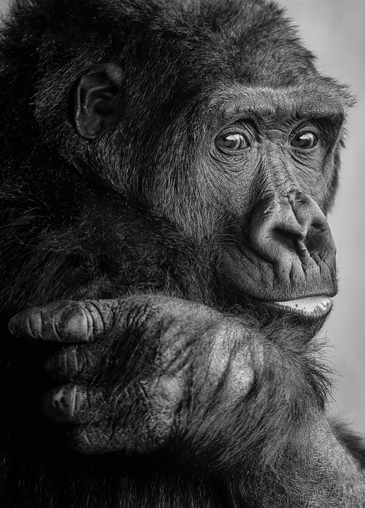
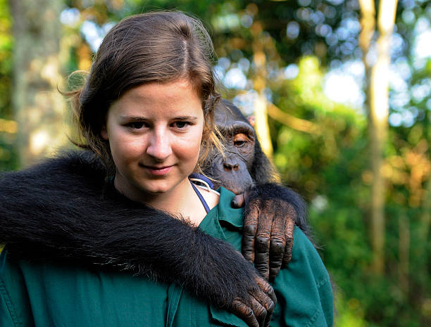

Vídeo é uma forma de comunicação visual que utiliza
imagens em movimento para transmitir uma mensagem.
É uma ferramenta poderosa para compartilhar
informações, contar histórias, educar, entreter e
conectar pessoas de todo o mundo.
Imagens
Nossa evolução?


A evolução humana é um processo complexo e fascinante que ocorreu ao BR
longo de milhões de anos. Acredita-se que a história da
evolução humana começou há cerca de 6 milhões de anos,
quando os primeiros ancestrais humanos apareceram na África.
Desde então, a espécie humana passou por uma série de mudanças e
adaptações que permitiram sua sobrevivência e prosperidade em diferentes ambientes..